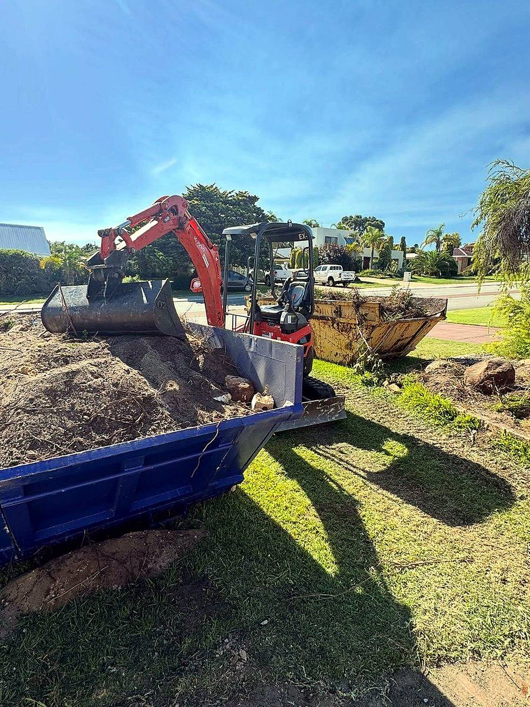
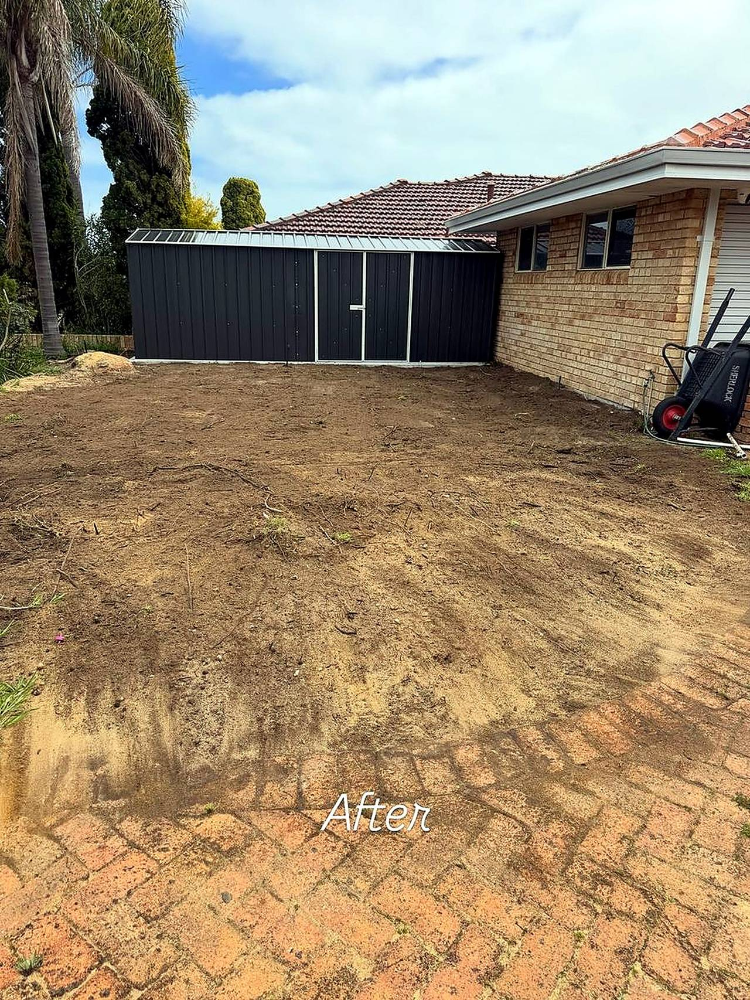
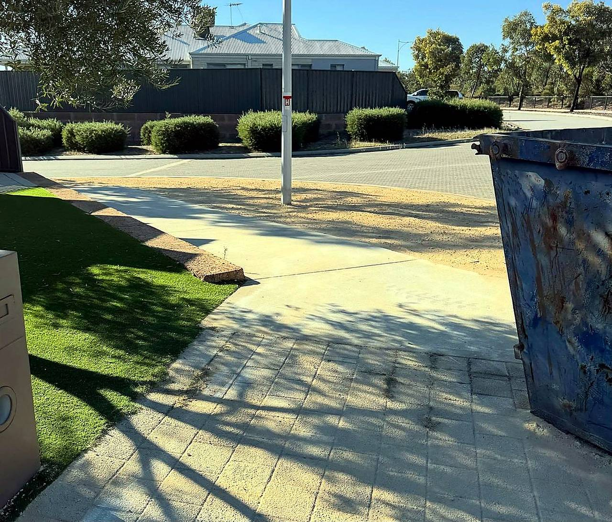
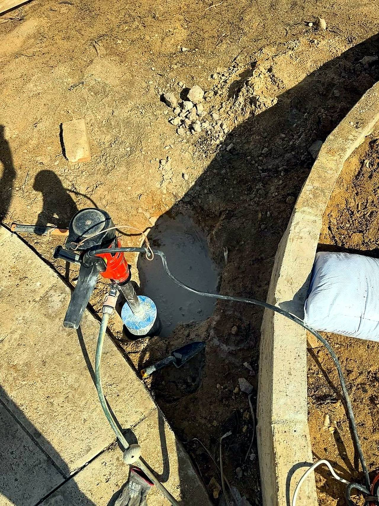
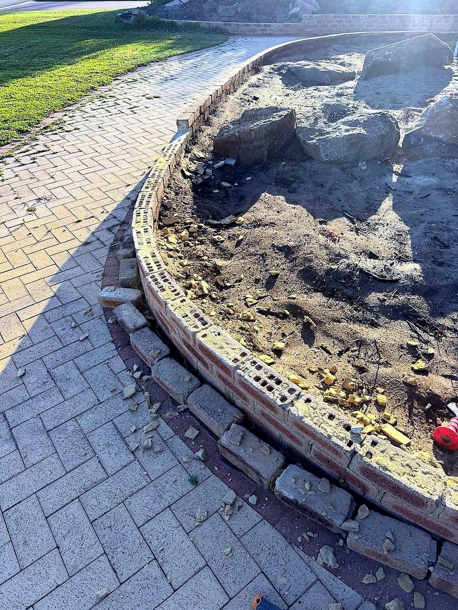
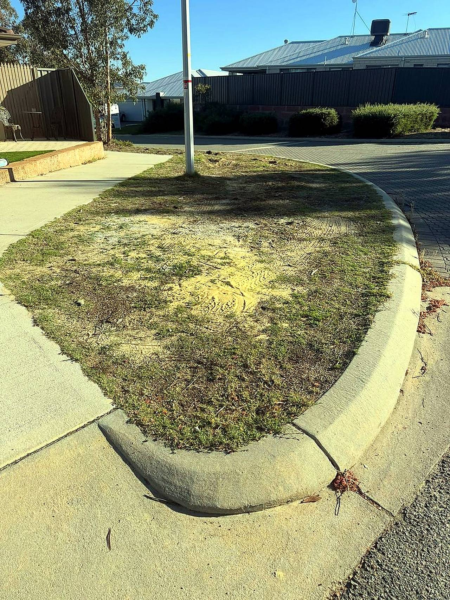
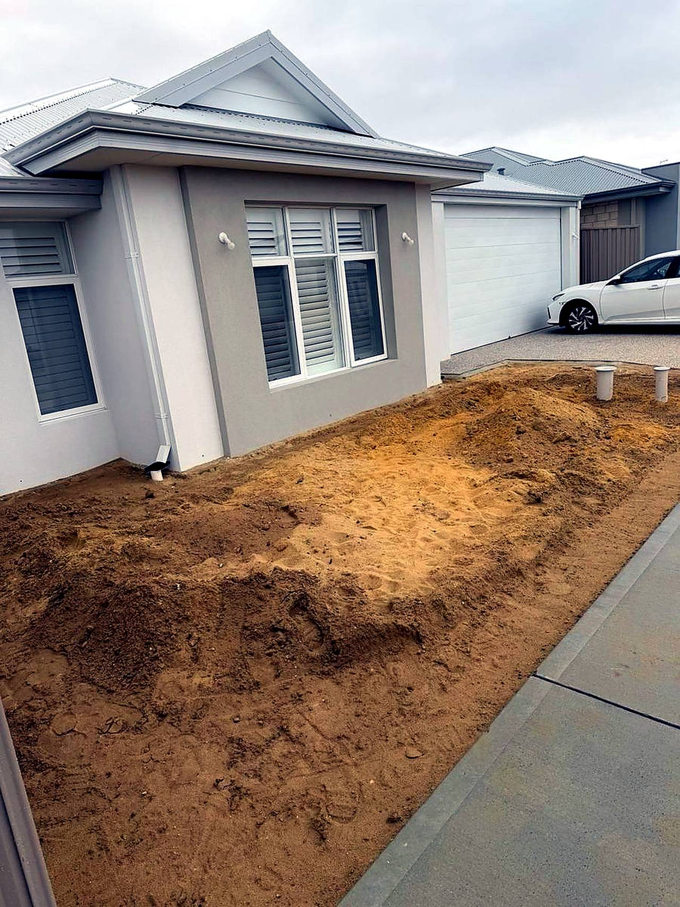
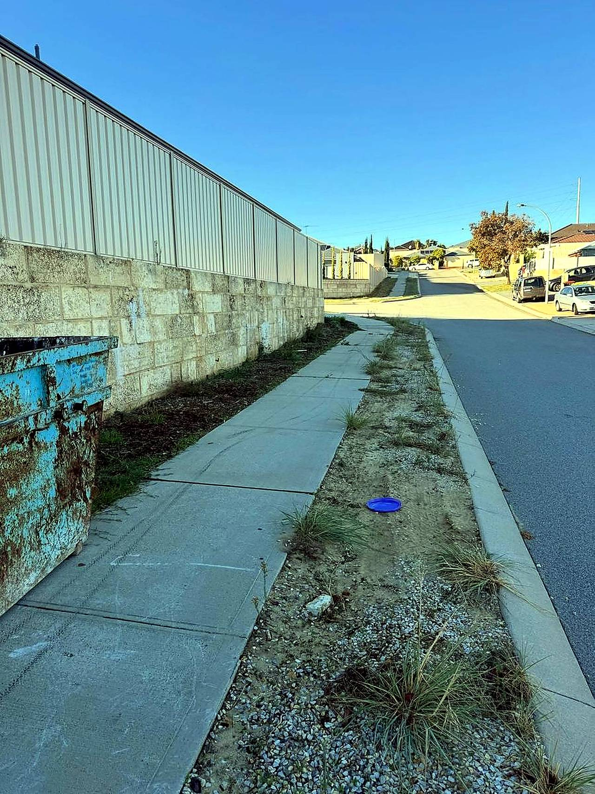

Excavation & trenching
Accurate. Efficient. Built right. Machine excavation and clean trenching for services, footings and more.
What we do
Machine excavation, site prep and cartage for new builds, extensions, verges and full sites.
Accurate. Efficient. Built right. Machine excavation and clean trenching for services, footings and more.
Level. Clear. Ready for what’s next. Full site prep for new builds, extensions and landscaping.
Move more. Achieve more. Bulk earthworks, spoil carting and site cuts — loaded out and gone.
Builder’s sand cleared and carted — driveways and yards handed back ready to use.
Top cuts, fill and rough levels set to plan — ready for the slab, paving or turf.
Crushed-limestone verges, tidy-ups and full site cleanouts — left neat, edge to edge.
How we work
From first call to final sweep — a simple, honest process.
01
Send a photo and the rough sizes — you’ll get a straight answer on scope and price.
02
We look at access, levels and where the spoil goes, then quote the job square.
03
Machine work done right — spoil loaded out, excavations clean, levels set.
04
Site left tidy and ready for the next trade — walked through with you before we go.
Why Ace
Lewis runs the machines and the jobs — 10+ years of hands-on experience on every site.
Real reviews from real clients — “absolute weapon, smashed the job out in no time.”
New builds, extensions, verges and full sites — homes, builders and businesses.
Mindarie, Banksia Grove, Currambine, Kallaroo, Landsdale and surrounding areas.

Ace Construction Services — on the machines in Perth’s northern suburbs.
Recent work
Sand clears, site cuts, verges and clean-ups — straight from recent jobs.







Photos from recent jobs — more on request.
Free quotes
Call or message with the details — we’ll come out, check it and quote it properly.
Call 0499 887 415
Email lewis@aceconstructionservices.com.au
Perth’s northern suburbs & surrounding areas — residential & commercial